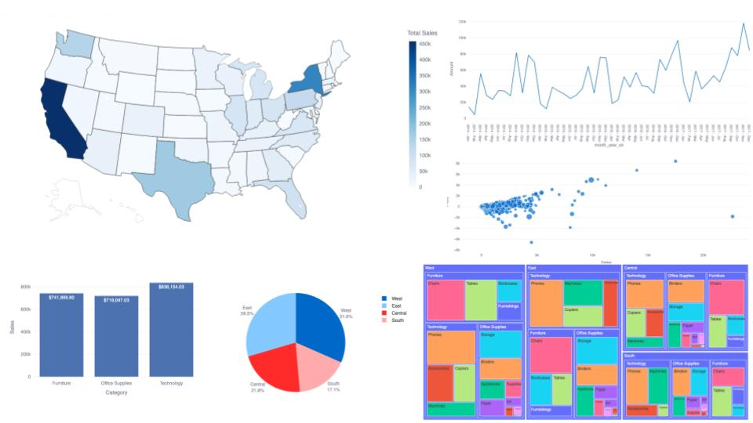
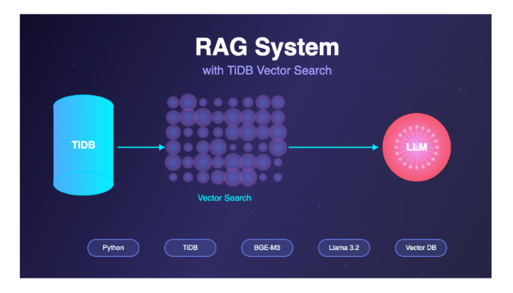
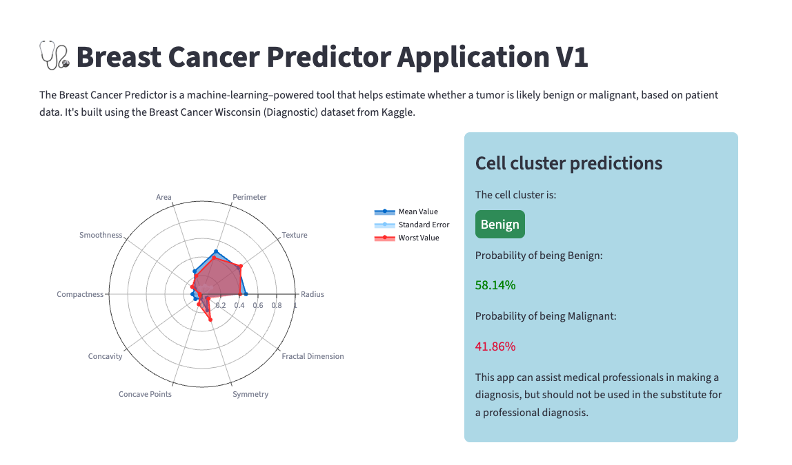
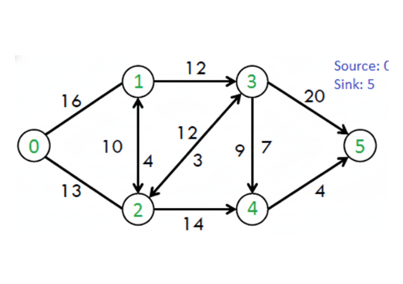
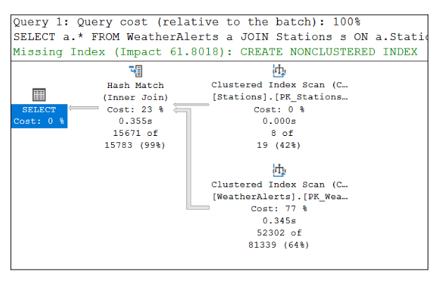

About Me
Who I Am
I’m a Master’s student in Computer Science and Systems at the University of Washington Tacoma, skilled in secure software development, system optimization, and data-driven research. Experience spans cryptographic protocol design, machine learning, database internals, and distributed computing. Passionate about solving complex problems through code and experimentation.
Open to roles in software engineering, data engineering, security engineering, or research and teaching in academic environments.
My Skills
- Programming Languages: Java, Python, JavaScript, SQL, PostgreSQL, MySQL, HTML, CSS, PHP, R, Rust
- Frameworks: TensorFlow, PyTorch, Streamlit, Bootstrap, Node.js, JUnit, WordPress, FastAPI, Rest APIs
- Libraries: scikit-learn, Pandas, NumPy, Matplotlib, ReportLab, Plotly, Ollama
- Tools: Bootstrap, Excel, Git, GitHub, GitHub Actions, Google Colab, IntelliJ, Jupyter Notebook, Linux, Mac OSX, MS SQL Server, PyCharm, SQL Server, TiDB, VS Code, Windows, WordPress
- Quantitative: Physics, Mathematics, Calculus, Algebra
- Data & Analytics: Data Analysis, Statistical Modeling, Data Visualization, Tableau, Power BI
Researches & Projects
Researches
Master’s Thesis (In Progress)
Optimizing Performance and Efficiency of Lattice-Based Post-Quantum Cryptography Algorithms in Resource-Constrained UAV Environments
- Architecting a secure UAV protocol by integrating Kyber (PQC) and Ascon-MAC.
- Implementing NTT, vectorization, and parallelization to optimize for resource-constrained hardware.
- Simulating protocol performance in Python to benchmark latency, memory, and computation time.
- Conducting formal security verification with ProVerif to ensure quantum resistance and protocol robustness.
Master's Independent Study
Post-Quantum Cryptosystems
- Conducted an in-depth study of cryptographic schemes designed to resist quantum attacks, focusing on lattice-based, hash-based, and multivariate systems.
- Analyzed theoretical foundations (e.g., computational complexity, quantum vulnerabilities) and practical implementations, including Learning with Errors (LWE) encryption and homomorphic encryption.
- Produced a comprehensive research report/project evaluating current post-quantum standards and exploring novel cryptographic approaches.
Projects

Vizolytic (Sales Analytics & Reporting Dashboard)
A Python and Streamlit-based web application for interactive sales analytics and automated PDF reporting.

TiDB Vector Search RAG System
A Retrieval-Augmented Generation (RAG) system using TiDB's vector search capabilities for cybersecurity knowledge management.

Breast Cancer Prediction ML App
A simple web application built with Streamlit to predict breast cancer (Malignant or Benign) based on diagnostic features.

Empirical Analysis of Network Flow Algorithms
A Java-based empirical study comparing the performance of classic and optimized network flow algorithms.

Database Systems Internals Project
Database Systems Internals Project: Query Optimization.


Educations
University of Washington Tacoma, WA
Master of Science in Computer Science and Systems
Expected Graduation: March 2026 | GPA: 3.86 / 4.0
Thesis: Optimizing Performance and Efficiency of Lattice-Based Post-Quantum Cryptography Algorithms...
Relevant coursework: Advanced Algorithms, Machine Learning, Applied Distributed Computing, Post-Quantum Cryptography, Database Systems Internals
University of Washington Tacoma, WA
Bachelor of Science in Computer Science and Systems
Pierce College, WA
Associate in Arts in Academic Transfer AA DTA, Computer Science
Chiang Mai University, Thailand
Bachelor of Science in Physics with Minor in Mathematics
Work Experiences
University of Washington Tacoma, WA
-
Teaching Assistant (March 2025 - June 2025)
- - Led lab sessions, provided personalized feedback, and evaluated student Java programming projects.
- - Mentored with class projects, problem-solving strategies, and Java code debugging.
- - Taught collaborative project workflows using Git, GitHub, and VS Code.
- - Mentored 50+ students in data structures, algorithms, and computer science coursework.
- - Assisted with class projects, problem-solving strategies, and debugging Python/Java code.
- - Designed visual explanations for complex topics, improving student comprehension.
Computer Science Mentor (September 2024 - March 2025)
Pierce College, WA
-
Computer Science and Mathematics/Calculus Supplemental Instruction Tutor
- - Tutored and mentored 4 classrooms of 86 undergraduate students in Calculus, Introduction to Programming (Python), and Computer Science I & II (Java and Object-Oriented Programming).
- - Facilitated out-of-class group study sessions to reinforce course material and enhance understanding of class criteria.
- - Provided individualized and group support to students needing extra help, employing diverse teaching techniques to promote critical thinking and problem-solving skills.
- - Focused on content mastery and effective learning strategies to help students achieve passing grades.
- - Maintained a positive, encouraging learning environment and coordinated with professors to align supplemental instruction with course objectives.
The Princeton Review / Tutor.com, (Remote)
-
Mathematics and Computer Science Tutor
- - Tutored students in Algebra, Trigonometry, Calculus, and Computer Science, helping them deepen their understanding of core concepts outside of class hours.
- - Enhanced academic performance and supported retention in Mathematics and Java courses by applying effective instructional strategies.
- - Utilized diverse teaching techniques to encourage content mastery and independent problem-solving.
Pierce College, WA
-
Computer Science and Mathematics/Calculus Supplemental Instruction Tutor
- - Tutored and mentored 4 classrooms of 86 undergraduate students in Calculus, Introduction to Programming (Python), and Computer Science I & II (Java and Object-Oriented Programming).
- - Facilitated out-of-class group study sessions to reinforce course material and enhance understanding of class criteria.
- - Provided individualized and group support to students needing extra help, employing diverse teaching techniques to promote critical thinking and problem-solving skills.
- - Focused on content mastery and effective learning strategies to help students achieve passing grades.
- - Maintained a positive, encouraging learning environment and coordinated with professors to align supplemental instruction with course objectives.
Thai Meteorological Department, Bangkok, Thailand
-
Secretary to the Deputy Director-General for Academic Affairs (February 2013 - May 2018)
- - Coordinated daily operations and communications for the Deputy Director of Academic Affairs, ensuring smooth workflow across multiple academic and research divisions.
- - Managed schedules, appointments, and official meetings, including preparation of agendas, briefing materials, and meeting minutes.
- - Organized, reviewed, and maintained official documents, reports, and research materials for quick reference and decision-making.
- - Acted as a liaison between internal departments and external organizations, facilitating timely communication and collaboration.
- - Maintained confidential records, monitored project progress, and coordinated schedules and meeting agendas.
- - Supported executive activities, including travel arrangements, conference participation, and preparation of presentations or official submissions.
- - Handled sensitive information with discretion and ensured compliance with organizational procedures and standards.
- - Analyzed historical and real-time climate data from meteorological stations, radar, satellite imagery, and computer models to develop accurate climate and seasonal predictions.
- - Collaborated in developing and refining weather models using statistical and predictive analysis, supporting seasonal outlooks for Thailand and Southeast Asia.
- - Provided expert insights on global and regional climate factors (e.g., ENSO, IOD, Asian monsoon, MJO, SST) to guide strategies in pollution control, agriculture, water management, and climate change mitigation.
- - Communicated complex meteorological concepts to the public as a monthly guest speaker on the Department’s radio station, ensuring accurate dissemination of academic information.
- - Served as a special lecturer for new meteorologist training programs, instructing junior staff on forecasting techniques and climatological methodologies.
- - Presented climate predictions and recommendations at local and international seminars, conferences, and forums, including participation in the ASEAN Climate Outlook Forum.
- - Analyzed wave height data in the Gulf of Thailand and the Andaman Sea using the WAM (Wave Analysis Model) for sea state forecasting.
- - Participated in international meetings and conferences on marine meteorology and tsunami preparedness, contributing to professional discussions and seminars.
- - Forecasted wave heights and sea conditions using the Wave Analysis Model (WAM).
- - Represented Thailand in marine meteorology and tsunami preparedness conferences.
- - Collected and recorded marine meteorological data from buoys and automatic weather stations for wave observation reports.
- - Researched air-sea interactions and coordinated with domestic and international agencies to enhance data accuracy and dissemination.
Meteorologist Practitioner, Climatological Center (February 2010 - May 2018)
Meteorologist Practitioner, Marine Meteorological Center (May 2006 - January 2010)
Awards & Achievements
- Outstanding Service Award of Summer Quarter 2024, Pierce College, WA
- Chancellor's Lists of Spring and Fall Quarter 2020, Pierce College, WA
- ESCAP/WMO Typhoon Committee member for long-range forecasting (2017)
- Committee and Secretary of the Automatic Weather Stations (AWS) Project 87 Stations (2014)
- Committee and Secretary of the Daily Meteorological Dictionary Team (2014)
- Construction Supplies Acceptance Committee and secretary of the Marine Meteorological Warning System Project (2010 - 2013)